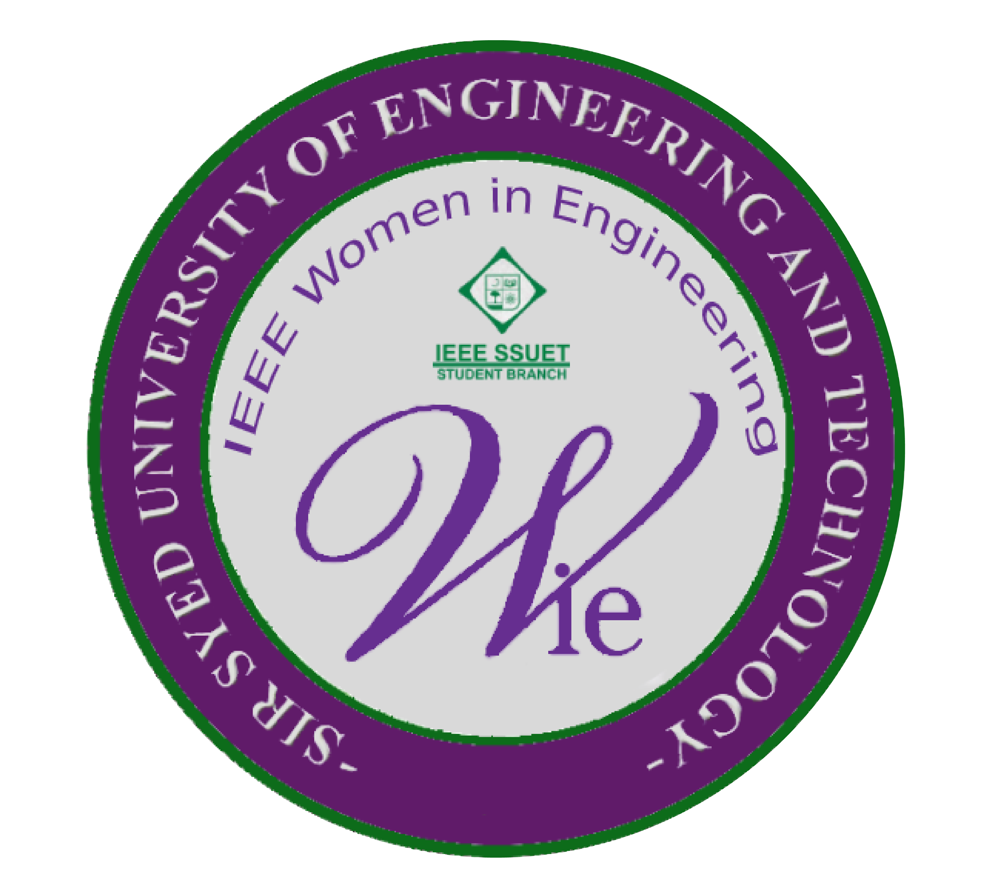
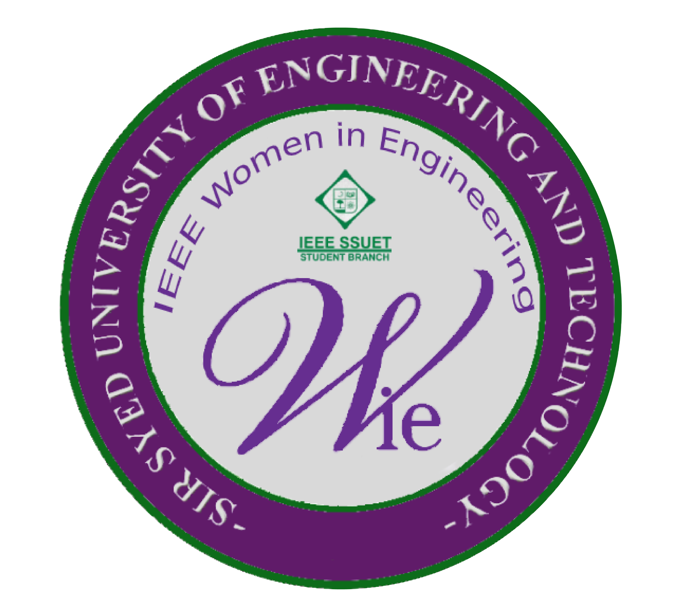

Frequently Asked Questions
What is IEEE?
IEEE is a worldwide community of over 420,000 technology and engineering professionals in
more than 160 countries. They are all united by a common desire to continuously interact,
learn, collaborate and innovate. For over 130 years, IEEE members have helped shape the
world’s technology future.
How can IEEE SOCIETY help you to build your success story?
As an IEEE member, you are part of the world’s largest community of technology professionals, a network of communication and learning that is unrivaled in the industry.
How can IEEE help you build your knowledge?
As an IEEE member you have only IEEE members get exclusive access to the largest library of electrical engineering, computer science, and electronics technical literature, as well as technology trends, industry news, and events.
How can IEEE help you to build your network?
As an IEEE member you can collaborate with IEEE colleagues member groups, and build a support group for your profession, industry, or project.
How can IEEE help you to build your expertise and open career goals?
As an IEEE member you can join professionals, experts, and advisors that can help shape your career, offer resources to acquire new skills, advance your professional development, and provide numerous opportunities for involvement, recognition, and reward.
What is the IEEE Student Branch?
An IEEE Student Branch gives students a community of peers, and a connection to faculty and industry professionals who drive innovation in countless technical fields. Student involvement in Branch activities, whether special projects, social and technical meetings, outreach programs, conferences, local Section or Regional opportunities, etc.
Who is the IEEE SSUET branch counselor?
Engineer Tauseef Mubeen.
What is the IEEE Computer Society?
The IEEE Computer Society is the premier source for information, inspiration, and collaboration in computer science and engineering. Connecting members worldwide, the Computer Society empowers the people who advance technology by delivering tools for individuals at all stages of their professional careers.
What are the benefits of IEEE Computer Society?
The IEEE Computer Society sponsors more than 200 technical conferences and events each year, including the industry-oriented “Rock Stars” series, all over the world, aimed at research and industry professionals. Our publications are peer-reviewed, indexed, and authored by technology thought leaders worldwide, and include 17 scholarly journals and 13 magazines featuring the latest technology trends. We also offer cutting-edge products such as the myComputer app (available for iOS or Android), that provide unprecedented user-driven access to our content, and our Digital Library with more than 550,000 articles and papers spanning the full spectrum of computer science and technology.
Who is the advisor of IEEE Computer Society SSUET ?
Dr.Shaheena Noor
What is the actual motive of this society?
The motive of this society is to provide a platform where you can show your technical skills and gain an experience under supervision of professionals.
How to contact us?
IEEE Computer Society: asharali@ieee.org
Facebook Click here
Instagram Click here LinkedIn Click here
Facebook Click here
Instagram Click here LinkedIn Click here
What is IEEE WIE SSUET?
IEEE Women in Engineering (WIE) is a global network of IEEE members and volunteers dedicated to promoting women engineers and scientists, and inspiring girls around the world to follow their academic interests in a career in engineering and science.
What are the benefits of IEEE WIE and why should you be part of it?
IEEE Women in Engineering (WIE) is one of the world’s leaders in changing the face of engineering. Our global network connects nearly 20,000 members in over 100 countries to advance women in technology at all points in their life and career.
Joining our society will give you access to a multitude of career drives, scholarship opportunities and most importantly help you learn how to groom yourself in to a professional individual. Plus you'll be helping in making amazing things happen for girls in our university.
Can men not join IEEE WIE society?
We are a very gender inclusive society and any participation from our male counterparts will provide us nothing but give us joy. Help women in STEM grow with you.
Who is the advisor of IEEE WIE SSUET ?
Engr.Sundus Zehra
Why You should become a member of IEEE?
Technical innovation, cutting-edge knowledge, networking events, and
special member perks are all available to IEEE members. Members help IEEE
achieve its objective of advancing technology for mankind and the profession,
while also providing a forum to students across the globe to explore regarding
professions of innovation.
How can I become a member of IEEE?
Go to IEEE.org, then click Join IEEE. Select Join as student.
Then you'll be redirected to the IEEE Membership
Application where you must complete all seven stages in order to acquire
membership. After completing the first two stages, you will be led to the
catalogue area, where you can find the IEEE Computer Society by clicking on
society memberships. Then you'll be sent to a new page where you'll see the
words add to cart. Since Computing society membership costs $8 and IEEE Student Membership cost 27$,
your total cost as a
student membership will be $35. Apply promocode "FUTURE50" for 50% discount. Complete the remaining steps afterwards. After that, you will become a member of the IEEE Computer Society's community.
Note: Make sure you let the advisor or chairperson know about your membership. You can simply mail on asharali@ieee.org
What is the IEEE's mission?
IEEE's main goal is to promote technical innovation and excellence for the
greater good.
What is the IEEE acronym for?
The Institute of Electrical and Electronics Engineers (IEEE) is pronounced
"Eye-triple-E." This is the entire official title of the corporation, which was
chartered underneath this name. Engineers, scientists, and other technicians have
long been members of IEEE, the world's biggest technical professional group.
Is it possible for me to purchase additional memberships?
Surely try! You can also join other societie ( WIE)